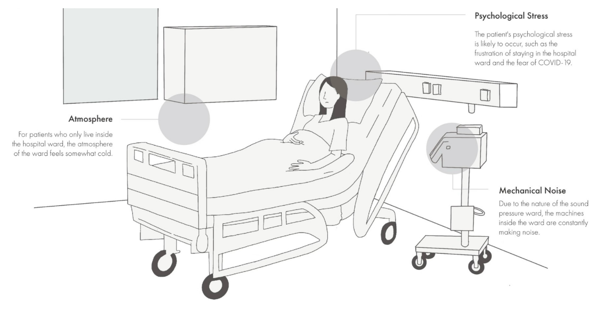
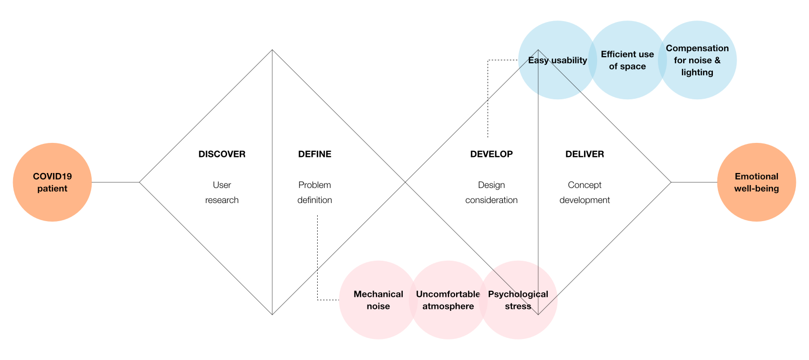
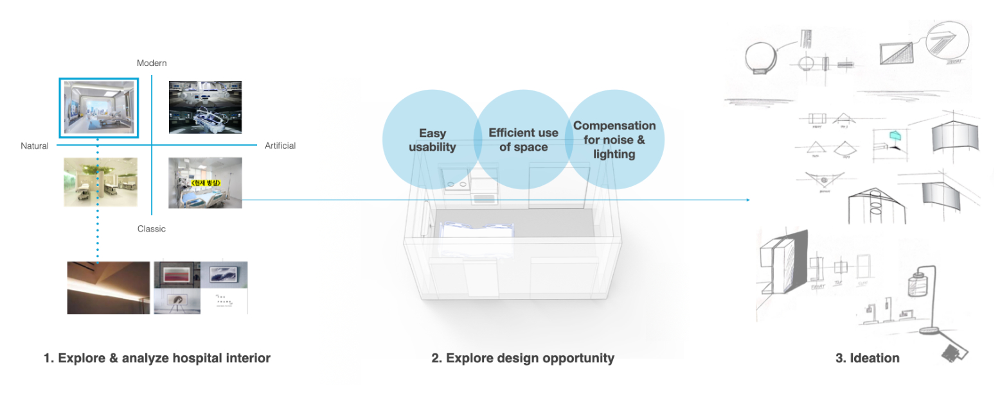
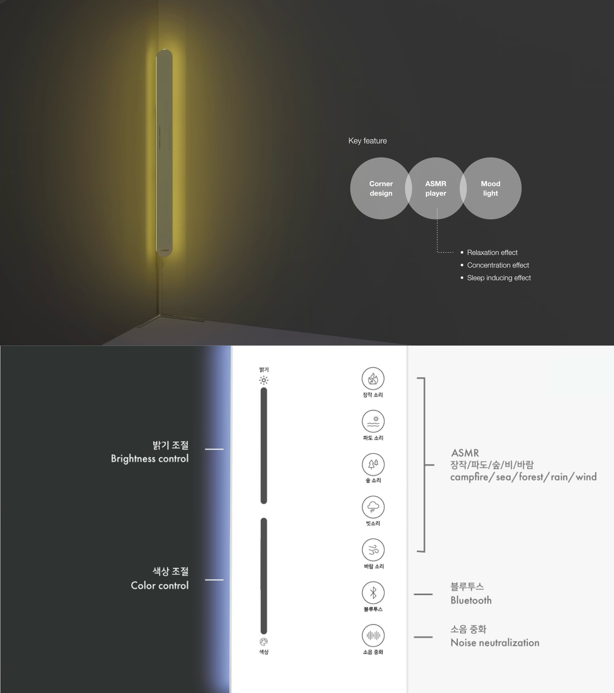

Designing Interior/Product of Mobile Clinic Module for COVID-19 Patients
This project aims to design a product for patients in mobile clinic settings. To alleviate patient anxiety and support emotional regulation, psychological and environmental stressors were identified, and sensory interaction strategies such as light and sound were proposed for adaptive, human-centered medical spaces. As a result, an ASMR-inspired ambient lighting system was designed.
How might we reduce negative emotions of COVID-19 patients in a negative pressure ward?
The goal of this project was to design a product that improves the patient experience in negative pressure wards, which were widely used during the COVID-19 pandemic. Despite the development of mobile clinics, issues with the patient experience in these wards still persist. The focus of this project was to reduce negative emotions associated with being in a negative pressure ward and, in doing so, improve the overall patient experience during a difficult and isolating time.

Concept development.
To design a suitable product for a mobile negative pressure ward, the current hospital interior was evaluated and analyzed. Using the design considerations derived from the identified issues, design opportunities were explored to determine a product that would fit well within the limited space of the existing hospital ward while meaningfully improving the patient experience.


Corney: An ASMR-inspired ambient lighting system.
The resulting concept, Corney, is an ASMR-inspired ambient lighting system designed for use in mobile negative pressure wards. By combining soft visual cues with a calming interaction, the system aims to reduce feelings of isolation, anxiety, and stress, supporting a more humane and emotionally supportive care environment for patients undergoing treatment in constrained clinical spaces.
